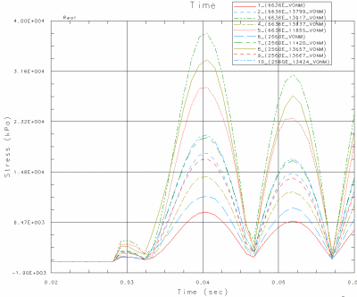
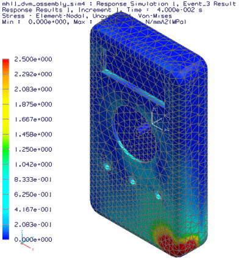

在响应仿真中，可评估当前事件的响应。软件分两步计算响应：
第一步：计算模态响应
如果当前还不存在任何模态响应，在执行响应评估时(例如使用评估节点函数响应对话框)，将会自动执行此步骤。不过，您未执行响应评估也可以计算模态响应。
对于瞬态响应分析，软件会使用时程积分计算每个时间点的模态响应
对于频率和随机响应分析，软件会计算每个频率的模态响应
第二步：计算物理响应
在给定时间或频率点处，计算给定节点或单元集。
对于瞬态、频率和随机事件，软件使用“模态位移”或“模态加速度”数据恢复方法“恢复”物理响应
对于响应谱事件，软件使用模态近似方法计算峰值响应
|
注释 |
对于准静态事件，软件将计算静态响应；没有模态响应步骤。 |
根据执行的评估类型，响应结果以以下两种格式之一保存：响应函数或轮廓结果。
响应函数是保存在 AFU 文件中的时间(时间历史记录)函数或频率(结果涵盖了某个频率范围)函数。
这些函数出现在XY 函数导航器和仿真导航器的事件节点中，可以在其中图形显示它们并分析结果数据。您可以评估给定节点上的位移、速度、加速度和反作用力。您可以评估给定单元上的应力、应变、单元力、梁单元力和壳单元合应力。
|
注释 |
您也可以为每个正则模态对事件激励的响应生成响应函数。 |
|

|
轮廓结果是针对特定时间点或特定频率的涵盖整个模型或选中事件的轮廓图形显示。可在仿真导航器或后处理导航器中查看“事件”节点中的轮廓结果。
|

|